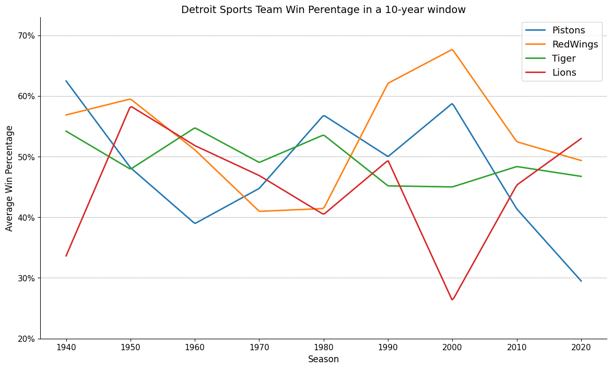

import pandas as pd
import numpy as np
import matplotlib.pyplot as plt
import re
from packaging.version import VersionVisualize Detroit’s sports teams win percentages
Goal
How have the win percentages for Detroit’s major sports teams (Pistons, Red Wings, Tigers, and Lions) changed over the past 80 years using a 10-year sliding window?
Load daset
datasets={
'pistons': 'https://en.wikipedia.org/wiki/List_of_Detroit_Pistons_seasons',
'redwings': 'https://en.wikipedia.org/wiki/List_of_Detroit_Red_Wings_seasons',
'tiger': 'https://en.wikipedia.org/wiki/List_of_Detroit_Tigers_seasons',
'lions': 'https://en.wikipedia.org/wiki/List_of_Detroit_Lions_seasons'
}Utils
def get_window_and_winratio(df, window=10, team='Pistons'):
df['Window'] = (df['Year'] // window) * window
if team == 'RedWings' or team == 'Lions':
df = df.groupby('Window').agg({'Wins': 'sum', 'Losses': 'sum', 'Ties': 'sum'}).reset_index()
df['WinRatio'] = (df['Wins'] + 0.5 * df['Ties']) / (df['Wins'] + df['Losses'] + df['Ties'])
else:
df = df.groupby('Window').agg({'Wins': 'sum', 'Losses': 'sum'}).reset_index()
df['WinRatio'] = df['Wins'] / (df['Wins'] + df['Losses'])
df.columns = [col + '_' + team if col != 'Window' else col for col in df.columns]
return dfPistons
# pd.set_option('display.max_rows', None)
# pd.reset_option('display.max_rows')
wiki_pistons = pd.read_html(datasets['pistons'])[1][1:]
pistons = pd.DataFrame()
pistons['Year'] = wiki_pistons['Team'].str[:4]
pistons[['Wins','Losses']] = wiki_pistons[['Wins','Losses']]
pistons = pistons[~(pistons['Year'].str.contains('Fort|Detr'))]
pistons[['Year', 'Wins', 'Losses']] = pistons[['Year', 'Wins', 'Losses']].astype(int)
pistons| Year | Wins | Losses | |
|---|---|---|---|
| 1 | 1941 | 15 | 9 |
| 2 | 1942 | 17 | 6 |
| 3 | 1943 | 18 | 4 |
| 4 | 1944 | 25 | 5 |
| 5 | 1945 | 26 | 8 |
| ... | ... | ... | ... |
| 82 | 2020 | 20 | 52 |
| 83 | 2021 | 23 | 59 |
| 84 | 2022 | 17 | 65 |
| 85 | 2023 | 14 | 68 |
| 86 | 2024 | 44 | 38 |
84 rows × 3 columns
RedWings
# pd.set_option('display.max_rows', None)
# pd.reset_option('display.max_rows')
wiki_redwings = pd.read_html(datasets['redwings'])[2][1:]
redwings = pd.DataFrame()
redwings['Year'] = wiki_redwings['NHL season']['NHL season'].str[:4]
redwings[['GP', 'Wins','Losses', 'Ties', 'OT']] = wiki_redwings['Regular season[3][6][7][8]'][['GP','W','L','T','OT']]
redwings = redwings[~((redwings['Year'].str.contains('^Detr|^Tota')) |
(redwings['Wins'].str.contains('^—')) |
(redwings['Losses'].str.contains('^—')) |
(redwings['Ties'].str.contains('^—\[m\]')))]
redwings['OT'] = redwings['OT'].str.replace('\[k\]','', regex=True)
redwings['Ties'] = redwings['Ties'].apply(lambda x: 0 if x == '—' else x) # redwings.loc[redwings['Ties'] == '—', 'Ties'] = 0
redwings['OT'] = redwings['OT'].apply(lambda x: 0 if x == '—' else x) # redwings.loc[redwings['OT'] == '—', 'OT'] = 0
redwings[['Year', 'Wins', 'Losses', 'Ties', 'OT']] = redwings[['Year', 'Wins', 'Losses', 'Ties', 'OT']].astype(int)
redwings['Ties'] = redwings['Ties'] + redwings['OT']
redwings = redwings[['Year', 'Wins', 'Losses', 'Ties']]
redwings| Year | Wins | Losses | Ties | |
|---|---|---|---|---|
| 1 | 1926 | 12 | 28 | 4 |
| 2 | 1927 | 19 | 19 | 6 |
| 3 | 1928 | 19 | 16 | 9 |
| 4 | 1929 | 14 | 24 | 6 |
| 6 | 1930 | 16 | 21 | 7 |
| ... | ... | ... | ... | ... |
| 97 | 2020 | 19 | 27 | 10 |
| 98 | 2021 | 32 | 40 | 10 |
| 99 | 2022 | 35 | 37 | 10 |
| 100 | 2023 | 41 | 32 | 9 |
| 101 | 2024 | 39 | 35 | 8 |
97 rows × 4 columns
Tiger
# pd.set_option('display.max_rows', None)
# pd.reset_option('display.max_rows')
wiki_tiger = pd.read_html(datasets['tiger'])[1]
tiger = pd.DataFrame()
tiger['Year'] = wiki_tiger['Season']
tiger[['Wins','Losses']] = wiki_tiger[['Wins','Losses']]
tiger = tiger[~(tiger['Year'].str.contains('Total'))]
tiger[['Year', 'Wins', 'Losses']] = tiger[['Year', 'Wins', 'Losses']].astype(int)
tiger| Year | Wins | Losses | |
|---|---|---|---|
| 0 | 1901 | 74 | 61 |
| 1 | 1902 | 52 | 83 |
| 2 | 1903 | 65 | 71 |
| 3 | 1904 | 62 | 90 |
| 4 | 1905 | 79 | 74 |
| ... | ... | ... | ... |
| 120 | 2020 | 23 | 35 |
| 121 | 2021 | 77 | 85 |
| 122 | 2022 | 66 | 96 |
| 123 | 2023 | 78 | 84 |
| 124 | 2024 | 86 | 76 |
125 rows × 3 columns
Lions
# pd.set_option('display.max_rows', None)
# pd.reset_option('display.max_rows')
pd_version = Version(pd.__version__)
wiki_lions = pd.read_html(datasets['lions'])[1]
lions = pd.DataFrame()
lions['Year'] = wiki_lions['Season'][['Season']]
if pd_version <= Version("1.5.2"):
lions[['Wins','Losses', 'Ties']] = wiki_lions['Regular season'][['.mw-parser-output .tooltip-dotted{border-bottom:1px dotted;cursor:help}W', 'L', 'T']]
else:
lions[['Wins','Losses', 'Ties']] = wiki_lions['Regular season'][['W', 'L', 'T']]
lions = lions[~(lions['Year'].str.startswith('Totals'))]
lions[['Year', 'Wins', 'Losses', 'Ties']] = lions[['Year', 'Wins', 'Losses', 'Ties']].astype(int)
lions| Year | Wins | Losses | Ties | |
|---|---|---|---|---|
| 0 | 1928 | 9 | 3 | 2 |
| 1 | 1929 | 12 | 2 | 1 |
| 2 | 1930 | 5 | 6 | 3 |
| 3 | 1931 | 11 | 3 | 0 |
| 4 | 1932 | 6 | 2 | 4 |
| ... | ... | ... | ... | ... |
| 92 | 2020 | 5 | 11 | 0 |
| 93 | 2021 | 3 | 13 | 1 |
| 94 | 2022 | 9 | 8 | 0 |
| 95 | 2023 | 12 | 5 | 0 |
| 96 | 2024 | 15 | 2 | 0 |
97 rows × 4 columns
Aggregate data using a 10-year sliding window
window=10 ## change window
pistons_agg = get_window_and_winratio(pistons, window=window, team='Pistons')
redwings_agg = get_window_and_winratio(redwings, window=window, team='RedWings')
tiger_agg = get_window_and_winratio(tiger, window=window, team='Tiger')
lions_agg = get_window_and_winratio(lions, window=window, team='Lions')
df = pd.merge(pistons_agg, redwings_agg, on='Window').merge(tiger_agg, on='Window').merge(lions_agg, on='Window')
df.set_index('Window', inplace=True)
df| Wins_Pistons | Losses_Pistons | WinRatio_Pistons | Wins_RedWings | Losses_RedWings | Ties_RedWings | WinRatio_RedWings | Wins_Tiger | Losses_Tiger | WinRatio_Tiger | Wins_Lions | Losses_Lions | Ties_Lions | WinRatio_Lions | |
|---|---|---|---|---|---|---|---|---|---|---|---|---|---|---|
| Window | ||||||||||||||
| 1940 | 228 | 137 | 0.624658 | 265 | 190 | 91 | 0.568681 | 834 | 705 | 0.541910 | 35 | 71 | 4 | 0.336364 |
| 1950 | 342 | 368 | 0.481690 | 351 | 218 | 131 | 0.595000 | 738 | 802 | 0.479221 | 68 | 48 | 4 | 0.583333 |
| 1960 | 314 | 492 | 0.389578 | 308 | 292 | 116 | 0.511173 | 882 | 729 | 0.547486 | 66 | 61 | 11 | 0.518116 |
| 1970 | 367 | 453 | 0.447561 | 267 | 410 | 115 | 0.409722 | 789 | 820 | 0.490367 | 66 | 75 | 3 | 0.468750 |
| 1980 | 466 | 354 | 0.568293 | 273 | 410 | 117 | 0.414375 | 839 | 727 | 0.535760 | 61 | 90 | 1 | 0.404605 |
| 1990 | 394 | 394 | 0.500000 | 438 | 248 | 100 | 0.620865 | 702 | 852 | 0.451737 | 79 | 81 | 0 | 0.493750 |
| 2000 | 482 | 338 | 0.587805 | 395 | 163 | 98 | 0.676829 | 729 | 891 | 0.450000 | 42 | 118 | 0 | 0.262500 |
| 2010 | 326 | 462 | 0.413706 | 354 | 316 | 105 | 0.524516 | 782 | 835 | 0.483612 | 72 | 87 | 1 | 0.453125 |
| 2020 | 118 | 282 | 0.295000 | 166 | 171 | 47 | 0.493490 | 330 | 376 | 0.467422 | 44 | 39 | 1 | 0.529762 |
## check tiger aggregation with wiki data
tigercheck = get_window_and_winratio(tiger, window=10, team='').rename(columns={'Window':'Decade'}).set_index('Decade')
tigercheck.columns = [col.strip('_') for col in tigercheck.columns]
wikidec = pd.read_html(datasets['tiger'])[2]
wikidec['Decade'] = wikidec['Decade'].str.replace('s', '')
wikidec = wikidec[:-1]
wikidec = wikidec[['Decade', 'Wins','Losses']]
wikidec[['Decade', 'Wins', 'Losses']] = wikidec[['Decade', 'Wins', 'Losses']].astype(int)
wikidec.set_index('Decade', inplace=True)
wikidec[['Wins','Losses']] == tigercheck[['Wins','Losses']]
pd.merge(tigercheck, wikidec, on='Decade')
tiger[tiger['Window'] == 2020]
# note: test passed for all windows except for 2020,
# because wikidec does not count wins/losses for 2024| Year | Wins | Losses | Window | |
|---|---|---|---|---|
| 120 | 2020 | 23 | 35 | 2020 |
| 121 | 2021 | 77 | 85 | 2020 |
| 122 | 2022 | 66 | 96 | 2020 |
| 123 | 2023 | 78 | 84 | 2020 |
| 124 | 2024 | 86 | 76 | 2020 |
Plot Detroit’s major teams trends
from matplotlib.ticker import FixedLocator, FuncFormatter
from scipy.interpolate import make_interp_spline
# Teams and their win ratio columns
teams = {'Pistons': 'WinRatio_Pistons',
'RedWings': 'WinRatio_RedWings',
'Tiger': 'WinRatio_Tiger',
'Lions': 'WinRatio_Lions'}
# Generate new x values for smooth curves
x_new = np.linspace(df.index.min(), df.index.max(), 300)
# Create big4 smooth curves and plot
# nb: it's better to smooth lines when you have several data points
k=1 ## k>=2 to smooth lines
fig, ax = plt.subplots(figsize=(14, 8))
for team, col in teams.items():
spl = make_interp_spline(df.index, df[col], k=k)
y_smooth = spl(x_new)
plt.plot(x_new, y_smooth, label=team, linewidth=2)
plt.yticks(size=11)
plt.xticks(size=11)
plt.xlabel('Season', size = 12)
plt.ylabel('Average Win Percentage', size = 12)
plt.title('Detroit Sports Team Win Perentage in a '+str(window)+'-year window', size = 14)
yticks = np.arange(0.2, 0.8, 0.1)
ax.yaxis.set_major_locator(FixedLocator(yticks))
ax.yaxis.set_major_formatter(FuncFormatter(lambda y, _: f'{int(round(y * 100))}%'))
ax.set_ylim(0.20, 0.73)
ax.yaxis.grid(which='major', color='gray', linestyle='--', linewidth=0.5)
ax.spines[['right', 'top']].set_visible(False)
plt.legend(loc='best', fontsize=13)
# if k>=2:
# plt.savefig('detroit-avg-win-smoothed.png')
# else:
# plt.savefig('detroit-avg-win.png')
plt.show()
Discussion
The plot answers the question of how the winning percentages of the four major Detroit sports teams (Pistons, Red Wings, Tigers and Lions) have changed over the last 80 years. Wikipedia was scraped for data on wins, losses and ties by season for each team. For a fair comparison across sports, we computed the winning percentage as the number of wins divided by the total number of games played (i.e. wins plus ties plus losses). We assumed that a tie is 1/2 of a win, so the winning percentage was computed as \(\frac{(wins + 0.5×ties)}{(wins+ties+losses)}\). For Pistons and Tigers (basketball and baseball) ties do not occur so the winning percentage was simply computed as \(\frac{(wins)}{(wins+losses)}\). A 10 year moving average was plotted to identify trends in the team’s win percentages.
The Pistons saw high performance in 1940, 1980, and 2000, followed by periods of decline. The Red Wings experienced a notable rise from 1980 to 2000, with a subsequent downward trend. The Tigers’ win percentage remains relatively stable around 50% with minor fluctuations with lowest performance between 1990 and 2000. The Lions show an up and down trend, starting low, peaking in 1950, 1990 and 2010 and then declining again.